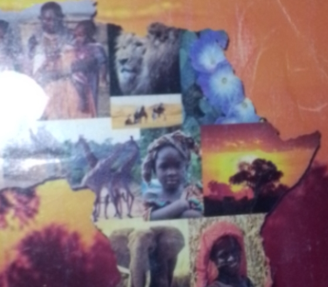

Christianity
Four Bible Truths You Must Know!
- Realize and acknowledge that you are a sinner and are truly sorry for your sins! Romans 3:23 2.
- Acknowledge that there is a penalty to paid for your sins...! Romans 6:23
- Realize that Jesus paid for your sins and the sins of the whole world when He died on the cross at Calvary! Romans 5:8
- Believe in your heart that He will forgive you of your sins and save you, if you ask Him to! Romans 10:9-13
If you can truthfully say "yes" to the above four truths then all you have to do to be saved is to ask Him to forgive you of your sins and to save you, meaning it from your heart!
If you are sincere and completely honest with God, there will be a Wonderful peace and joy that comes into your heart with a desire to live for Him! The Bible says "Therefore if any man be in Christ, he is a new creature: old things are passed away; behold all things are become new." II Corinthians 5:17 (New Testament)
When you call upon the name of Lord Jesus Christ, confess to Him that you are a sinner and, from the heart, ask Jesus to forgive you of your sins and save you, then you are now a child of God and a new creature in Christ Jesus. When you trust Jesus, accepting Him as your Lord and Saviour, you are immediately birthed into the family of God. You have God's "free" gift of eternal life and your name is written down in the lamb's book of life! In the last book of the New Testament portion of the Bible, Revelation 20:14 says, "And, death and hell were cast into the lake of fire." This is the Second death. Verse 15 says, "And whosoever was not found written in the book of life was cast into the lake of fire." The second death is eternal separation from God, forever! All unsaved who die without Christ in this life go to Hell where they will abide forever!
FIRST: After you have asked Jesus to save you, please read completely through this booklet, the Gospel of John and the Book of Romans, because it is God's Word that grows our faith and increases our understanding of His Word and His plan and purpose for our life, Romans 10:17! Then find yourself a "King James" New Testament or a whole "King James" Bible and begin reading in Matthew, the first book of the New Testament, and read through Revelation, the last book of the New Testament. Testament means "a contract" His promise to you and you have His Word on it!
The Bible is God's verbally inspired, infallible, inerrant, pure preserved word. God spoke it and Holy men of God wrote His words recording them in 66 separate books that have been combined into one book called "The Bible". If you have a New Testament, please read II Timothy 3:16, II Peter 1:21 and in a whole Bible, in the Old Testament, please find and read Psalm 12:6&7!
SECONDLY: Find a good King James, Bible Believing, Bible preaching, soul winning, missionary supporting Baptist Church, preferably an Independent Baptist Church, and attend it faithfully! And as soon as you do, and know it to be a good sound church that is teaching and preaching the Word of God without error, join it and tell your pastor that you would like to follow the Lord in believers Baptism. Baptism will not save you, doing so is in obedience to God's Word! It is also a testimony to the world that you have trusted Jesus as your Lord and Saviour, an essential step of obedience in your spiritual growth! If you want and expect the Lord's blessing on your life, do not put it off! Please find and read in your New Testament, II Corinthians 10:25 and Acts 8:35-38!

Okuyat Morgan Jeremiah
Christian, Student, Developer and Content creator.
2011 baby